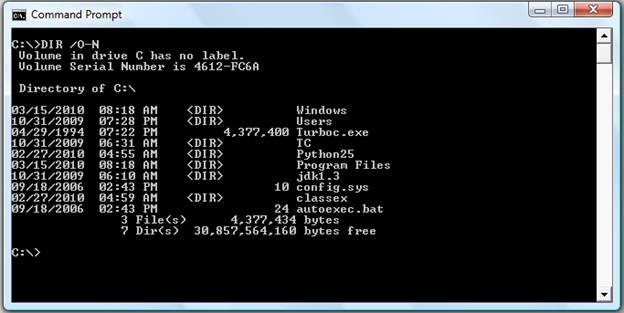

STAM 102 :: Lecture 05 :: Operating System – Some Fundamental DOS Commands,Rules for naming files in DOS and Types of files

Operating System
Operating system is a set of software that controls and manages hardware and basic system operations for a computer. The operating system loads programs into the computer's memory, runs these programs, and manages peripherals like disks and printers.
Example:
Disk Operating System (DOS) |
|
Windows |
|
LINUX |
|
Mac |
|
UNIX |
Disk Operating System (DOS)
- In the 1980s or early 1990s, the operating system that shipped with most PCs was a version of the Disk Operating System (DOS)created by Microsoft: MS-DOS.
- MS-DOS is a disk-based, single-user, single-task and character based user interface (CUI) operating system.
Goto MSDOS from Windows Operating System:
Click Start Button à Choose Program à Choose Accessories à Click Command Prompt as shown below:
Or Click Start Button à Choose Run à Type cmd in the Open tab as shown below:
Command Prompt will get displayed as shown:
The DOS commands can be entered in the command prompt and executed.
Some Examples of DOS commands
DIR Command
The dir command allows you to see the available files in the current and/or parent directories. Examples:
- DIR
Lists all files and directories in the directory that you are currently in.
- dir /w
If information on the date / time and other information on the files are not needed, then this command can be used to list just the files and directories going horizontally, taking as little as space needed.
- dir /on
List the files in alphabetical order by the names of the files.
- dir /o-n
List the files in reverse alphabetical order by the names of the files.

FORMAT Command
FORMAT command is used to erase all information of a diskette or fixed drive.
- format a:
Would erase all the contents off a disk. Commonly used on a diskette that has not been formatted or on a diskette you wish to erase.
- format a: /q
Quickly erases all the contents of a floppy diskette. Commonly used to quickly erase all information on the diskette.
- format c:
This would erase all the contents of C: hard disk drive. In other words, unless you wish to erase all your computer's information, this command should not be done unless you're planning to start over.
COPY Command
COPY command allows to copy one or more files to an alternate location.
Examples:
- copy *.* a:
Copy all files in the current directory to the a disk drive.
- copy file1.txt file2.txt
Copy the contents of file1.txt to file2.txt
- copy myfile1.txt+myfile2.txt
Copy the contents in myfile2.txt and combines it with the contents in myfile1.txt.
PATH Command
Path is used to specify the location where MS-DOS looks when using a command. For example, when using the command "format", if the path is not specified to where the command is you will receive bad command or file name.
Example:
LABEL Command
Label is used to view or change the label of the computer disk drives.
Example:
label a: mydisk
This would label the disk currently in the drive to "mydisk", but will not label if your disk is write protected.
VOL Command
VOL command displays the volume information about the designated drive.
MD (Make Directory) Command
MD command allows to create directories in MS-DOS.
Examples:
- md test
Creates the "test" directory in the directory in the currently directory.
- md c:\test
Creates the "test" directory in the c:\ directory.
CD (Change Directory) Command
CD (Change Directory) is a command used to switch directories in MS-DOS.
Examples:
- cd\
Goes to the highest level, the root of the drive.
- cd..
Goes back one directory.
- cd
Typing cd alone will print the working directory.
DEL Command
DEL command is used to delete files from the computer. Deleting files from MS-DOS does not send files to the recycle bin.
Examples:
- del test.tmp
- Deletes the test.tmp in the directory that you currently are in, if the file exists.
- del c:\windows\test.tmp
- Delete the c:\windows\test.tmp in the windows directory if it exists.
- Delete the c:\windows\test.tmp in the windows directory if it exists.
Rules for naming files in DOS
- The combination of the following characters can be used for writing names of directories and files:
Alphabets A to Z (both capital and small).
Digits 0 to 9.
Special characters like spaces ' ! A 0 $o & # @ % '-{}[]+-=-- .
- Some special characters which cannot be used are? / \ : 1< > II *.
- There are some words specifically reserved for special files and are not allowed if used singly. They are CON, COM1, COM2, COM3. COM4, AVX, LPT1, LPT2, LPT3, PRN, NUL. These words can be used in combination such as ASCon, deltacom1, Panamavx. etc.
- Files with extension names like .EXE, .COM and .BAT are called executable files and are given a special status by DOS.
- Dot (.) is allowed only once.
Types of files in DOS
DOS supports a wide variety of files. The type of the file can be identified with the extension of the file in the filename. The three letters following the name of the file is called as the extension of the file.
Examples:
.bak
Used by programs and users to make a copy of an existing file for safety and/or archive purposes.
.bas
A basic computer-language program file.
.bat
This is used for a batch file. Such a file is a series of commands in mostly plain english which perform an operation in DOS automatically. They come with some programs and may also be written by a user to make shortcuts or perform operations like sorting or backups.
.bin
A binary file.
.c
A file of programming language in the C format.
.dat
Used to hold information about a particular aspect of a program or about a particular operation. The latter may update a .dat file to reflect recent changes. Other operations in the program may then view this file and other .dat files while determining a course of action.
.db or .dbf
These are used by data base programs to hold the users' data information. Other programs may use them to hold information used by the application itself for such things as printer specifications regarding printer selection by the user.
.dir
Used to house a directory list, especially for communications programs.
.exe
An executable file.
References
| Download this lecture as PDF here |